Research Highlights
My research lies in the intersection of human-AI interaction and accessibility. I aim to enable AI assistants to provide human-level assistance in real-world tasks, so that AI assistants can understand users over time and proactively provide timely, personalized support.
 UIST 2026StateScribeChange awareness across real-world revisits
UIST 2026StateScribeChange awareness across real-world revisits
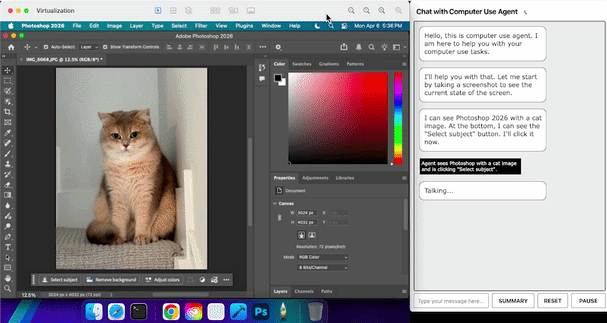
UIST 2026SidekickMultitasking with computer-use agents CHI 2026TouchScribeHand-object interactions with live descriptions Best Paper UIST 2024WorldScribeContext-aware live visual descriptions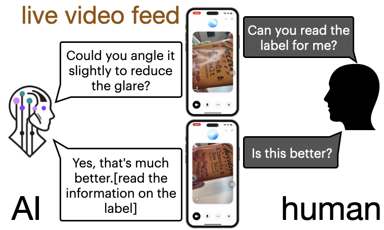
ASSETS 2025Live Video AIProbing gaps in ChatGPT's real-world assistance UIST 2022OmniScribeImmersive audio descriptions for 360° videosNews
06/2026StateScribe on accessible change awareness was accepted to UIST 2026!
06/2026Honored to receive the Taiwan Government Scholarship!
04/2026Honored to receive the Rackham Predoctoral Fellowship!
02/2026TouchScribe is accepted to CHI 2026 — see you in 🇪🇸 Barcelona!
10/2025Excited to share that I will be interning at Apple in Seattle this summer!
08/2025I will attend both UIST DS 2025 and ASSETS DC 2025!
08/2025Findings on ChatGPT's live video chat for real-world assistance were accepted to ASSETS 2025!
03/2025Honored to receive the Apple Scholars in AIML Ph.D. Fellowship (AI for Accessibility)!
01/2025Excited to share that I will be interning at Adobe Research in Seattle this summer!
10/2024WorldScribe received a Google Academic Research Award (Society-Centered AI)!
10/2024WorldScribe awarded Best Paper Award 🏆 at UIST 2024!
07/2024EditScribe and CustomAD accepted to ASSETS 2024, and WorldScribe to UIST 2024.
05/2024Started my internship at Meta Reality Labs in Toronto!
02/2024Received the Weinberg Cognitive Science Fellowship; passed candidacy exam — now a Ph.D. candidate!
12/2023Received the Rackham International Student Fellowship.
Publications
2026
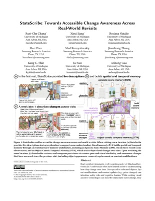
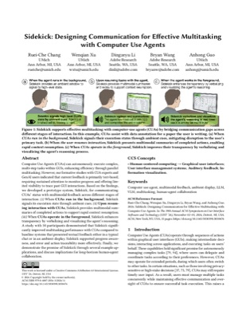
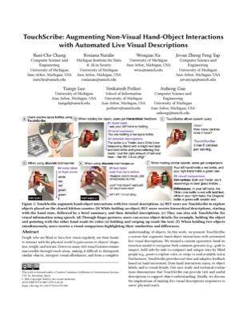
2025
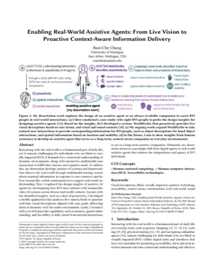
Enabling Real-World Assistive Agents: From Live Vision to Proactive Context-Aware Information Delivery
UIST 2025 Doctoral Symposium
—
ACM • PDF
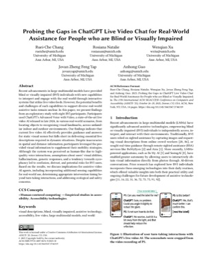
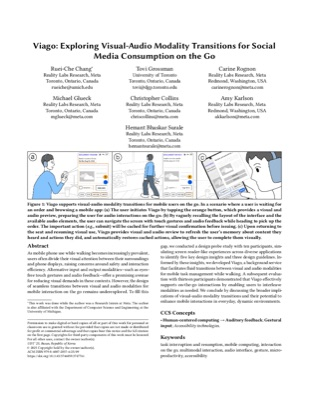
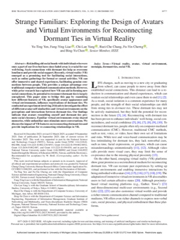
2024
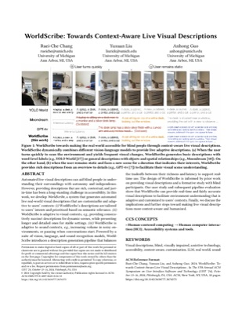
WorldScribe: Towards Context-Aware Live Visual Descriptions
UIST 2024
( Best Paper Award)
—
ACM • PDF •
arXiv •
video •
project page
* Received a Google Academic Research Award (Society-Centered AI) and featured in Michigan Engineering News.
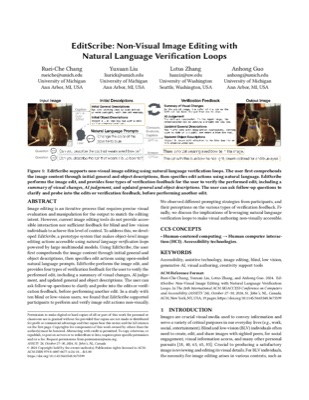
EditScribe: Non-Visual Image Editing with Natural Language Verification Loops
ASSETS 2024
—
ACM • PDF •
arXiv •
video
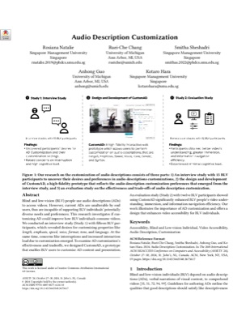
Audio Description Customization
ASSETS 2024
—
ACM • PDF •
video
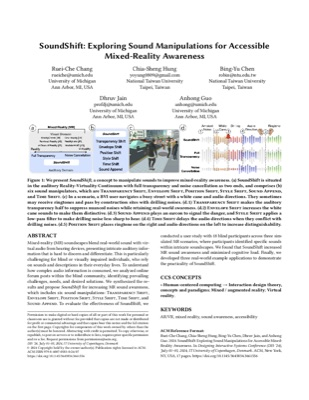
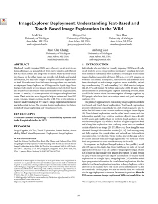
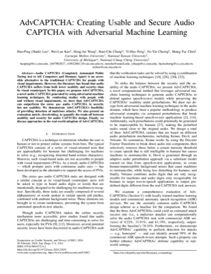
2023
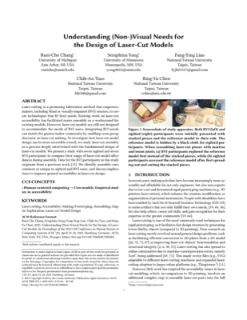
2022
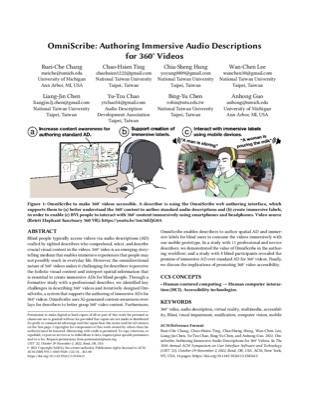
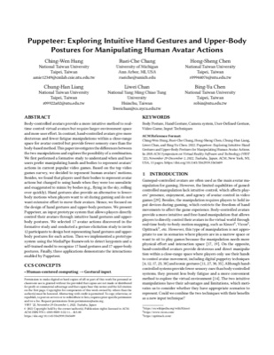
2021
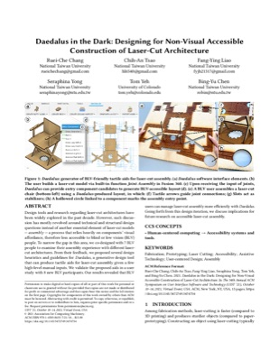
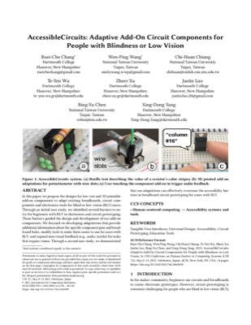
2020
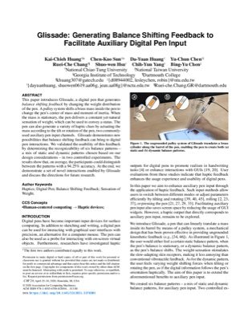
Glissade: Generating Balance Shifting Feedback to Facilitate Auxiliary Digital Pen Input
CHI 2020
( Honorable Mention)
—
ACM • PDF •
video
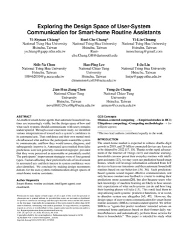
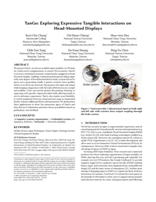
2019
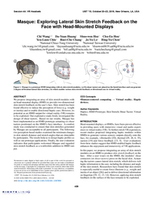